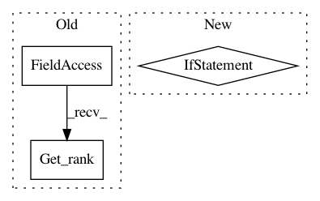

97e039127f068a1475988d4921169d002cca4156,baselines/ppo2/model.py,Model,__init__,#Model#,27
Before Change
self.save = functools.partial(save_variables, sess=sess)
self.load = functools.partial(load_variables, sess=sess)
if MPI is None or MPI.COMM_WORLD.Get_rank() == 0:
initialize()
else:
global_variables = tf.get_collection(tf.GraphKeys.GLOBAL_VARIABLES, scope="")
After Change
initialize()
global_variables = tf.get_collection(tf.GraphKeys.GLOBAL_VARIABLES, scope="")
if MPI is not None:
sync_from_root(sess, global_variables) //pylint: disable=E1101
def train(self, lr, cliprange, obs, returns, masks, actions, values, neglogpacs, states=None):
// Here we calculate advantage A(s,a) = R + yV(s") - V(s)
// Returns = R + yV(s")
advs = returns - values
In pattern: SUPERPATTERN
Frequency: 3
Non-data size: 3
Instances
Project Name: openai/baselines
Commit Name: 97e039127f068a1475988d4921169d002cca4156
Time: 2018-11-26
Author: peterzhokhoff@gmail.com
File Name: baselines/ppo2/model.py
Class Name: Model
Method Name: __init__
Project Name: NVIDIA/OpenSeq2Seq
Commit Name: cb556a585da0b65d28d2fc7d52c3851ac1a7d369
Time: 2018-05-30
Author: igor.a.gitman@gmail.com
File Name: open_seq2seq/utils/utils.py
Class Name:
Method Name: get_results_for_epoch
Project Name: openai/baselines
Commit Name: 7bccb2969fa860e5a62a9ee26d3bb57d736e32d9
Time: 2018-09-04
Author: christopherhesse@users.noreply.github.com
File Name: baselines/logger.py
Class Name:
Method Name: configure